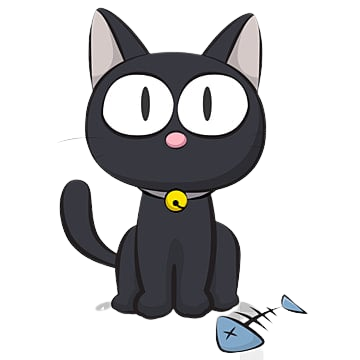

Decidiste entrar en el callejón. Si bien está muy oscuro, tu vista se adapta para poder ver casi a la perfección en la oscuridad. Sin embargo, caminás cautelosamente y te preparás para que — en el peor de los casos — si ocurre algo, que no te tome por sorpresa. Mientras avanzás, empezás a escuchar sonidos muy agudos. Según tu experiencia, provienen de algún animal muy pequeño — probablemente un roedor. Frenás y procedés a escuchar atentamente, utilizando tus orejas como un radar para captar de dónde vienen esos sonidos. Si tu cálculo no falla, hay al menos dos criaturas de esas en las cercanías.
Tu concentración se ve interrumpida por un leve aroma que llega hacia tu hocico. ¡Huele delicioso! ¿De dónde proviene ese olor? Levantás la cabeza y notás que se intensifica. Y sí, en una de las ventanas del edificio de la izquierda, hay un platito de color oscuro y suponés —con mucha seguridad— que tiene alimento y que el olor viene de ahí.
Ahora tenés que analizar la situación. Podés elegir cazar a los roedores, que si bien tiene su dificultad, tenés bastante experiencia en el asunto. Además, sabés que son al menos dos así que te va a ser suficiente para alimentarte por hoy. Por otro lado, está la comida servida —literalmente— en una de las ventanas del edificio. El problema es que para llegar hasta el plato, no se ven superficies estables y tenés que dar saltos muy riesgosos y muy bien calculados. Teniendo en cuenta que estás un poco débil por el hambre, se ve una tarea bastante dificultosa.
¿Qué vas a hacer?